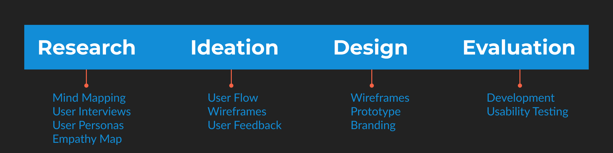

Project Overview
Create a mobile app that allows users to book flights, a hotel, and a car on specific dates to different destinations. The travel app will focus on helping users to organize their plans into one itinerary.
Goals
- Help users book a flight, hotel, and car on a specific date for different destinations.
- Assist in organizing all travel plans into one itinerary.
- Ability to learn about local experiences and culture.
Challenges
- Balancing the scope of how many solutions one app can solve.
- Finding a need within the travel industry which is not being met.
- Helping users feel more comfortable traveling.
Solutions
- Allow users to freely explore locations before traveling.
- Assist in planning trips through an easy to use interface where they can view their saved options.
- Make planning a less tedious exeperience that can be done entirely on the app.
Process
